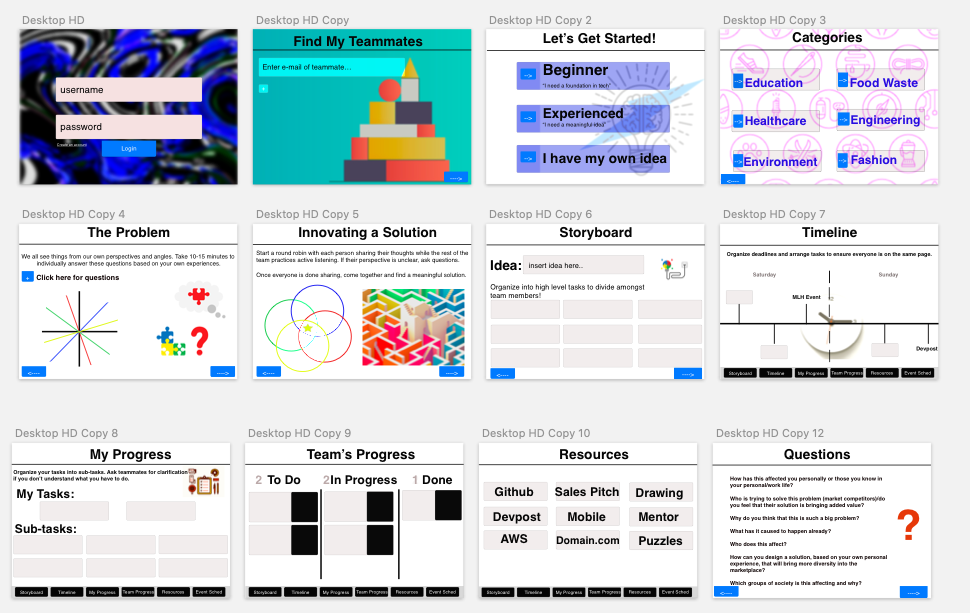

Inspiration
My Journey Into HackathonsUnderstanding the Problem
I was able to gather feedback from many students on their perspective and how to improve. The common pain points that I found were:
- Social anxiety
- Financial burdens
- Unclear structure of how a hackathon works
- Lack of communication during essential points of process
- Stress managing coursework and applying to real life
- Awareness of underlying problems in society, seeking meaningful work
User Personas

Ideation
User Flow
Wireframing
UI Design
I designed a simple web app to help students visually understand the thought process towards making a hackathon more efficient and to improve time management.
InVision design